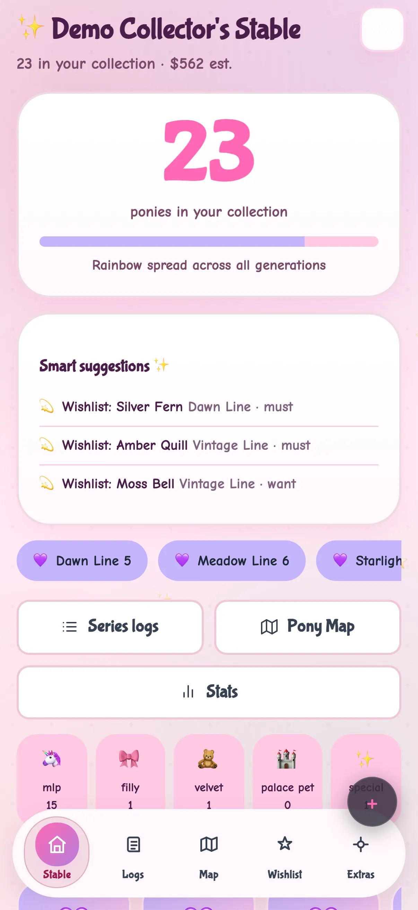

Fictional example Fictional people and story. Screenshots and video are from the real app, with sample data labeled for this persona — not a live customer account.
DeePonyCap · Dubai, UAE
How Fatima keeps the kids’ shelves honest
Fatima logs books on phone, sorts shelves on iPad with the kids, plans donations on laptop.
“We stopped buying doubles.”

Before and after
Made-up numbers for a fictional week — not a real customer case.
Before
After DeePonyCap
A fictional day with Fatima
Sample screens for the story — not a recorded real session.
-
Scan a spine
During breakfast tidy Fatima adds a spine on her phone so the kids’ shelves stop lying about what is already owned.
-
Kids on iPad
After school the iPad shelf is a game: they point at favourites, she marks duplicates before the next book fair.
-
Donation list
Laptop donation list for the weekend drop — titles leaving the house on purpose, not vanishing into a car boot.
-
Wishlist trim
Wishlist trimmed on the laptop so the next buy is intentional, not a double of something under the bed.
-
Phone lock
Phone confirms tonight’s adds before she locks the screen and calls it a weekly win.
Watch it
A day across devices — silent walkthrough with captions. No autoplay with sound.
Read transcript
Fatima logs on phone, sorts on iPad, plans on laptop. Fictional.
Features Fatima uses
Fictional people and story. Screenshots and video are from the real app, with sample data labeled for this persona — not a live customer account.